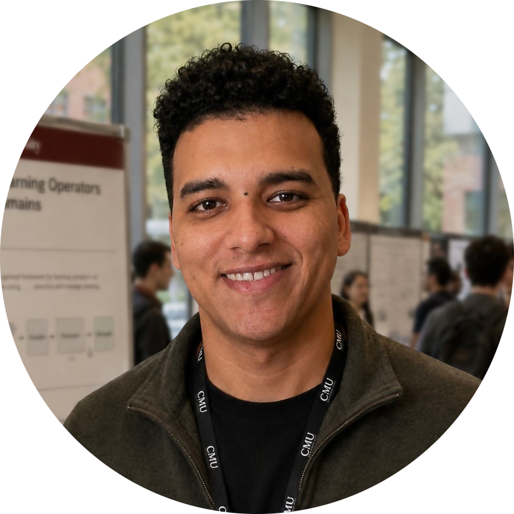
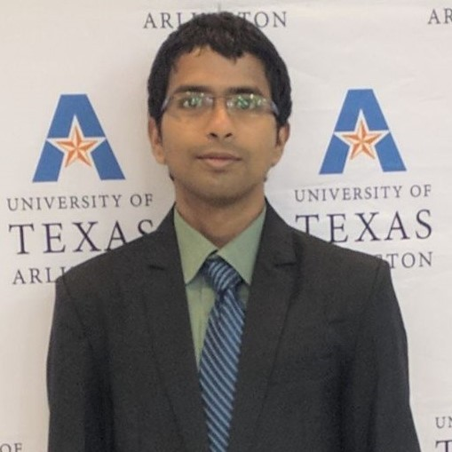
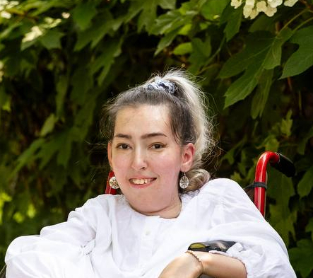
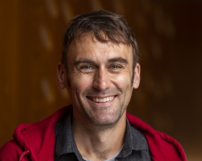

Natural Control
Speech, language, gesture, gaze, switch access, and multimodal input for robotic assistance.
Full-Day UIST 2026 Workshop · October 2026
Bringing together UIST AI, robotics, rehabilitation, and assistive technology communities to design robot interfaces that are controllable, personal, trustworthy, and grounded in disabled people's agency.
participants
interactive format
talks, demos, panels, breakouts, prototyping
The future of accessible robotics, inclusive robot-control interfaces, assistive robotics, and broader intersections of robotics and accessibility.
Workshop Focus
Assistive and embodied systems support mobility, manipulation, communication, navigation, rehabilitation, and everyday activities. Advancing these systems requires coordinated work across hardware, interaction design, autonomy, safety, evaluation, and deployment in real-world settings.
The workshop centers on technical exchange through short talks, live demos, breakout sessions, and structured synthesis. Participants will identify pressing research problems, compare evaluation approaches, and outline practical next steps across robotics and access tech.
Speech, language, gesture, gaze, switch access, and multimodal input for robotic assistance.
Interfaces for intervention, correction, handoff, uncertainty, and meaningful user control.
Feedback, explanation, consent, and failure recovery in everyday assistive contexts.
Participatory methods, personalization, disabled people's leadership, and long-term deployment.
Program
Goals, participant backgrounds, and shared vocabulary across UI, accessibility, and robotics.
Compact provocations on accessible HRI, assistive robotics, embodied AI, and UI techniques.
Assistive robot interfaces, prototypes, teleoperation tools, and interaction techniques.
What makes current robot interfaces inaccessible, brittle, or hard to trust?
Autonomy, agency, safety, and user control in real assistive environments.
Small groups design interface concepts for concrete assistive robotics scenarios.
Research agenda, evaluation challenges, datasets, deployments, and community building.
Shared outputs, next steps, public resources, and collaboration paths.
Participate
Share your interests, technical priorities, and potential demo plans through the Interest Form. Responses help shape talks, breakout topics, and synthesis outputs.
Tell us what problems, methods, systems, and evaluation questions you want this workshop to prioritize.
Interest FormOutputs
The workshop emphasizes focused synthesis, open research directions, and sustained collaboration beyond the event.
A concise summary of major themes, recurring challenges, and promising opportunities raised across talks, demos, and breakout conversations.
A set of candidate research questions and directions that participants may explore in future projects, studies, and collaborations.
New connections among researchers and practitioners across relevant communities to support follow-on conversations, sharing, and collaboration.
A shared collection of available workshop materials such as slides, references, notes, and related resources contributed by participants.
Organizers

Carnegie Mellon University
Ph.D. student building cyber-physical human augmentation systems across embedded sensing, machine learning, robotics, speech and audio interfaces, and human-AI collaboration.

University of Texas at Arlington
Researcher developing assistive navigation and human-robot interaction systems that help blind and low-vision people navigate dynamic indoor environments and interact with robots.

Carnegie Mellon University
Presidential Postdoctoral Fellow working across accessibility, human-centered AI, mixed reality, and participatory design for agency and creative expression.
TU Dortmund University
Postdoctoral researcher studying AI-enhanced HRI, shared-control techniques for assistive robotic arms, autonomous-task intervention, and XR-based prototyping.
Hello Robot
Human-Robot Interaction Lead at Hello Robot creating accessible teleoperation, shared autonomy, navigation, and manipulation experiences for the Stretch mobile manipulator.
University of Maryland
Assistant Professor designing equitable assistive technology, open-source hardware, and expressive communication systems with participatory methods.
Cornell University
Assistant Professor directing the EmPRISE Lab, focused on physical robot caregiving, manipulation, haptic perception, tactile sensing, and real-world assistive systems.
Boston University
Assistant Professor developing machine-intelligence systems for real-world embodied, assistive, and autonomous applications, including accessible navigation.

Apple & Carnegie Mellon
Associate Professor and Director of Human-Centered Machine Intelligence and Responsible AI, working on accessibility technologies, AI/ML design, and deployable interactive systems.
Questions?